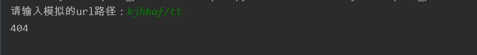

一、反射机制简介：
通过字符串的形式导入模块
通过字符串的形式，去模块中寻找指定的函数，并执行
规定用户输入格式 模块名/函数名 通过__import__的形式导入模块，并通过 hasattr和getattr 检查并获取函数返回值。
相关方法：
getattr:--根据字符串的形式去某个模块中寻找东西
hasattr:--根据字符串的形式去某个模块中判断东西是否存在
setattr:--根据字符串的形式去某个模块中设置东西
delattr:--根据字符串的形式去某个模块中删除东西
二、反射机制初识：
test.py
#!/usr/bin/env python
# -*- coding:utf-8 -*-
def f1():
return '我是F1，我被调用了'
def f2():
return '我是F2，我被调用了'
def f3():
return '我是F3，我被调用了'
index.py
#!/usr/bin/env python
# -*- coding:utf-8 -*-
"""
反射机制
1.根据字符串的形式导入模块。
2.根据字符串的形式去对象（某个模块）中操作其成员
实现思路：规定用户输入格式 模块名/函数名 通过__import__的形式导入模块，并通过 hasattr和getattr 检查并获取函数返回值。
"""
#通过用户输入的形式， 导入模块
inp = input('请输入需要导入的模块名：')
#__import__用于以字符串的形式导入模块
dd = __import__(inp)
#在模块寻找函数并执行函数
inp_func = input('请输入需要执行的函数：')
#getattr()用于以字符串的形式去某个模块中寻找函数
tager_func = getattr(dd, inp_func)
#在获取到的函数名后加()表示执行函数
result = tager_func()
print(result)代码执行结果：
请输入需要导入的模块名：test
请输入需要执行的函数：f2
我是F2，我被调用了
实例：基于反射模拟Web框架路由系统（一）
commons.py
#!/usr/bin/env python
# -*- coding:utf-8 -*-
def login():
return 'login'
def logout():
return 'logout'
def nb():
return '很牛逼的网页'
refec_demo.py
#!/usr/bin/env python
# -*- coding:utf-8 -*-
"""
基于反射模拟web框架路由系统
"""
from lib import commons
url = input('请输入模拟的url路径：')
if url.endswith('login'):
ret = commons.login()
print(ret)
elif url.endswith('logout'):
ret = commons.logout()
print(ret)
else:
print('404')
实例：基于反射模拟Web框架路由系统（二）
refec_demo1.py
#!/usr/bin/env python
# -*- coding:utf-8 -*-
from lib import commons
inp = input('请输入模拟的url路径：')
url_inp = inp.split('/')[-1]
if hasattr(commons, url_inp):
ret = getattr(commons, url_inp)
result = ret()
print(result)
else:
print('404')代码实现结果：
路径正确时结果：
路径不正确时结果：

实例：基于反射模拟Web框架路由系统（三）
manager.py
#!/usr/bin/env python
# -*- coding:utf-8 -*-
def home():
return 'Home'
order.py
#!/usr/bin/env python
# -*- coding:utf-8 -*-
def add_order():
return '添加订单'
refec_demo2.py
#!/usr/bin/env python
# -*- coding:utf-8 -*-
#用户输入规则：模块名/函数名
url = input('请输入模块名/函数名：')
target_modul, target_func = url.split('/')
#__import__导入模块
mod = __import__('lib.' + target_modul, fromlist=True)
#hasattr()判断函数是否存在
if hasattr(mod, target_func):
ret = getattr(mod, target_func)
result = ret()
print(result)
else:
print('404')当模块和函数都存在时，url路径调用结果：
当模块和函数都不存在时，url路径调用结果：